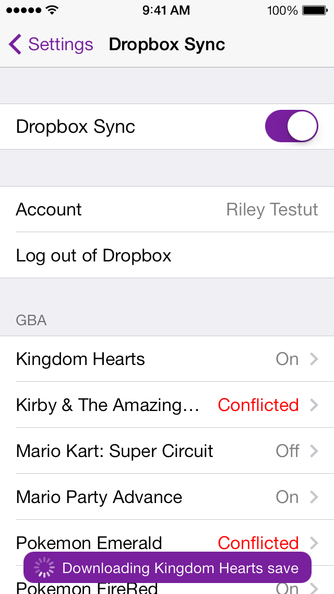
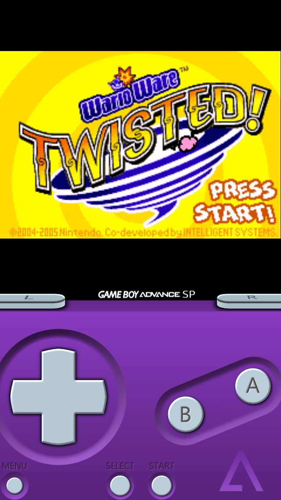
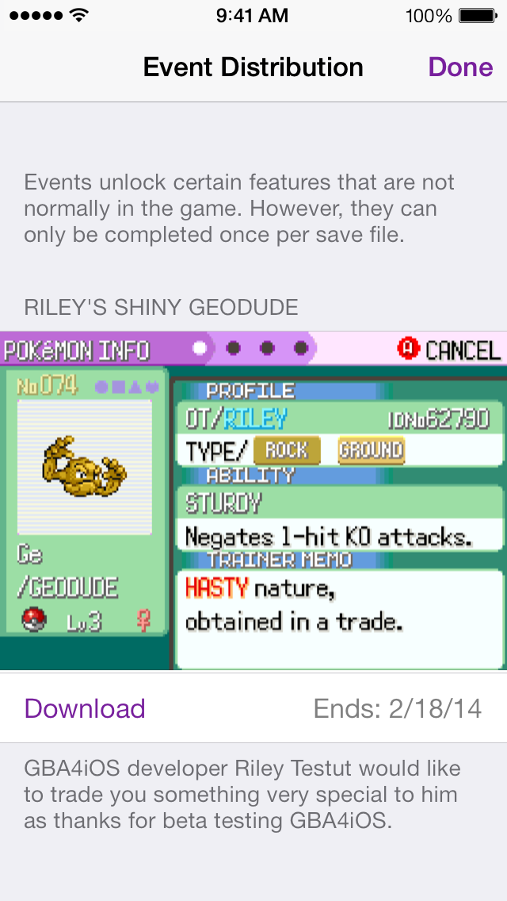

Out with the Old, In with the New.
The first thing you'll notice about the app is how completely different it looks. GBA4iOS 2.0 was designed from the ground up for iOS 7, with the goal of making everything not only look better, but simpler to use. Taking this a step further, GBA4iOS now has a built-in web browser for downloading games, making it much easier to start playing your favorite Game Boy Advance games. Finally, 2.0 has been fully optimized for iPads, giving Apple's tablet a first class emulation experience.


With GBA4iOS, cheaters always win.
The number one most requested feature is finally here: GBA4iOS 2.0 has full support for cheats! Playing some classic games are nice, but cheats give you a whole new level of freedom with what you can do. With support for five different cheat code formats, you don't have to worry about whether your code is compatible with GBA4iOS - it just works. Better still, per-game Master Codes are handled for you automatically by GBA4iOS, making the cheating experience just that much easier.
Take Classic Gaming one step further.
The Game Boy Advance revolutionized the handheld gaming industry. For the first time, it was possible to have a video game console with the power of a Super Nintendo in your pocket. However, before the Game Boy Advance was ever released, Nintendo had launched two extraordinarily successful devices into the portable game console market: the Game Boy and the Game Boy Color. An amazing feature of the Game Boy Advance was its backwards-compatibility with these previous portable console games, and now GBA4iOS is doing the same. No longer do you have to find a separate emulator to play these old games; if it's a Game Boy anything game, GBA4iOS has you covered.
Endless possibilities, distributed right to your pocket.
Cheats are fun, but nothing can top receiving special events from Nintendo for your Pokemon games. Unfortunately, these events are long gone, but with GBA4iOS 2.0, it's possible to receive all the events you missed, and even some that were never possible before! Want to obtain a shiny Treecko, or maybe catch a ferry to encounter the elusive Mew? Event Distribution brings back the joy of Nintendo events to your Pokemon games, and is exclusive to GBA4iOS users.
And with so many other features, GBA4iOS 2.0 is much more than an update.
It's a completely new experience.


